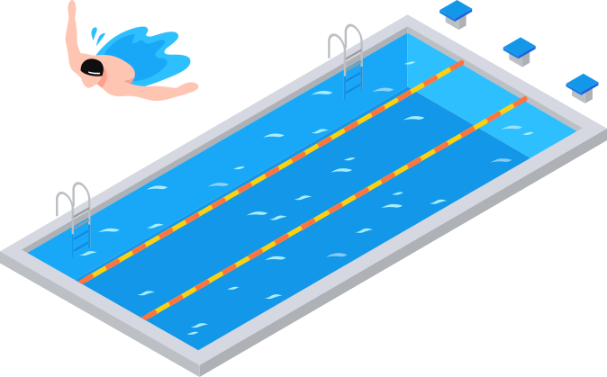

<!--#include virtual="/parts/header.html" -->

<section class="s-main">

	<div class="container">

		<div class="flex flex-wrap">

			<div class="flex-item flex-item-40">

				<div class="flex">

					<div class="flex-item flex-item-100">

						<div class="title-404 h1 mb0">404</div>

						<div class="dark-blue">Кажется вы заплыли на несуществующую страницу! Вернитесь на главную и попробуйте найти другую страницу</div>

					</div>

					<div class="flex-item flex-item-66">

						<a href="/" class="button button-full button-primary mb05">Вернуться на главную</a>

						<a class="button button-full button-secondary button-icon button-icon-left" href="/"> <span>Вернуться назад</span></a>

					</div>

				</div>


			</div>
			<!-- /.flex-item flex-item-33 -->

			<div class="flex-item flex-item-60 flex-md-order--1">

				

			</div>

		</div>
		<!-- /.flex.flex-wrap -->

	</div>
	<!-- /.container -->

</section>

<!--#include virtual="/parts/footer.html" -->